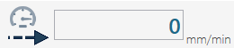
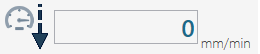
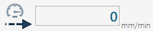

Nelle nuove versioni di Parametrix è possibile utilizzare la funzionalità “Taglio Singolo”. Selezionando dall’elenco la voce “Taglio Singolo”, ci troveremo di fronte a una pagina simile a questa.
Con il Taglio Singolo è possibile eseguire un taglio rettilineo (o anche inclinato) sulla lastra partendo dalla posizione in cui la macchina si trova e terminando alla lunghezza richiesta dall’utente. Con il taglio NON è possibile eseguire il taglio di archi o di Cerchi.
Bottoni tagli paralleli Permette lo spostamento parallelo della macchina.
Max La pressione di questo pulsante da parte dell’operatore fa si che la lunghezza di taglio effettiva che può essere tagliata sarà data dalla posizione attuale della macchina e il fine della lastra (il fine della lastra è calcolato rispetto alla direzione che la macchina ha in questo momento). Questo valore può differire da quello scritto dall’utente nella casella di testo.
Stop Si utilizza una volta che la macchina ha iniziato a tagliare e si decide di ridurre la lunghezza del taglio. Premendo tale pulsante la macchina si ferma e viene posta nella casella di testo “Lunghezza” la dimensione del percorso tagliata fino ad ora. In alternativa è possibile premere l’apposito pulsante sulla console per ottenere lo stesso comportamento del pulsante STOP.
Cambia Modalità Passate Permette di passare da modalità “passata piena” a “passata a step“ e viceversa.
Salva Premendo questo pulsante è possibile salvare tutti i parametri all’interno di un file per recuperarli successivamente.
Apri Premendo questo pulsante viene visualizzata una finestra contenente tutte le lavorazioni precedentemente salvate dall’utente. È possibile gestire le lavorazioni, quindi caricare i valori, cancellare le lavorazioni oppure annullare l’operazione e chiudere il pannello.
In base al tipo di materiale che si vuole lavorare è possibile settare i parametri in maniera differente e salvarli in caso di successive lavorazioni analoghe.
Lunghezza del taglio singolo E’ necessario inserire la lunghezza del taglio che si vuole eseguire, per poter effettuare la lavorazione. Se naturalmente il valore supera quello che effettivamente può essere tagliato, la macchina si ferma prima.
Misura spostamento Indica la distanza tra un taglio e il successivo in questo campo è possibile impostare solo valori positivi. Per effettuare la spianatura è consigliato impostare una “misura di spostamento” circa l’80% rispetto lo spessore dell’utensile.
Penetrazione nel materiale procedendo in avanti Indica la profondità di taglio sul materiale quando la macchina taglia verso il senso di rotazione del disco.
Penetrazione nel materiale procedendo indietro Indica la profondità di taglio sul materiale nella fase di taglio nella direzione opposta rispetto alla direzione dell’utensile.
Penetrazione nel materiale per l’ultima passata Indica la profondità di taglio che deve avere l’ultima passata dell’utensile sul materiale. Tale taglio è sempre in direzione opposta rispetto al movimento del disco.

Velocità di lavorazione procedendo in avanti Indica velocità desiderata per la fase di taglio in andata. Tale misura è espressa in millimetri al minuto.
Velocità di lavorazione procedendo indietro Indica velocità desiderata per la fase di taglio nel ritorno. Tale misura è espressa in millimetri al minuto.

Velocità di ingresso nel materiale Determina la velocità durante la fase di penetrazione dell’utensile nel materiale. Tale misura è espressa in millimetri al minuto.
Velocità di lavorazione dell’ultima passata Indica la velocità che la macchina deve tenere sul taglio nell’ultima passata. Tale misura è espressa in millimetri al minuto.
Velocità di ingresso nel materiale Determina la velocità durante la fase di penetrazione dell’utensile sul materiale. Tale misura è espressa in millimetri al minuto.

Velocità di lavorazione procedendo in avanti Indica velocità desiderata per la fase di taglio in andata. Tale misura è espressa in millimetri al minuto.
Per iniziare la lavorazione, posizionare innanzitutto la macchina nel punto di partenza desiderato. Una volta sistemata correttamente, è necessario inserire il valore della lunghezza del taglio nel campo apposito.
A questo punto, si può procedere con l’accensione del disco utilizzando i comandi presenti sulla pulsantiera del monitor. Quando tutto è pronto, avviare il processo premendo il tasto “Start ciclo”.
La lavorazione inizierà nella direzione in cui si trova la macchina al momento dell’attivazione del taglio, quindi è importante verificarne l’orientamento prima di avviare il ciclo.